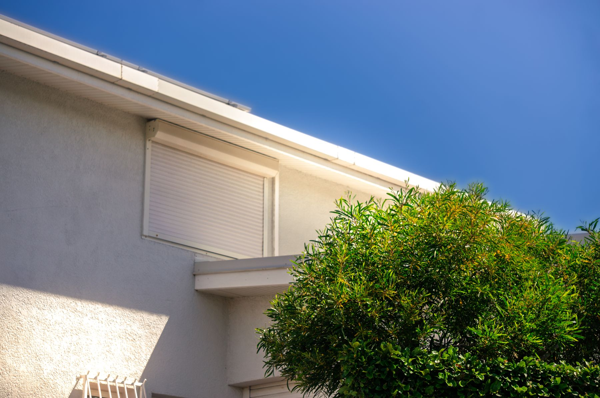

Concevoir et développer une expérience utilisateur
Pour cette SAÉ, nous avons travaillé sur EPISE, l’épicerie solidaire de l’UNC. L’objectif était de concevoir un site permettant de faciliter l’accès aux produits et de proposer une interface adaptée aux différents utilisateurs : bénéficiaires, donateurs et gestionnaires.
J’ai principalement travaillé sur la conception UX/UI sur Figma, avec l’identité visuelle, les composants et les différentes maquettes. J’ai également participé au développement du site, notamment sur la page d’accueil, le catalogue et le panier.

AC principale
AC secondaires
La pièce maîtresse
L’AC21.05 correspond à la partie où j’ai réfléchi aux différents parcours dans le site. EPISE avait plusieurs types d’utilisateurs avec des besoins différents : il fallait organiser les pages et les informations pour que chacun trouve facilement ce dont il avait besoin.
J’ai travaillé sur les parcours dans Figma afin de visualiser les différentes étapes et de construire les écrans en fonction des besoins de chaque utilisateur.
Le problème rencontré
Le principal problème était de réussir à proposer plusieurs parcours sans rendre le site compliqué à utiliser. Les besoins d’un bénéficiaire, d’un donateur ou d’un gestionnaire n’étaient pas les mêmes.
Comment j’ai débloqué la situation
J’ai commencé par découper les parcours étape par étape dans Figma. Cela m’a permis de voir quelles informations étaient nécessaires à chaque moment et d’éviter de mettre trop d’éléments sur les mêmes écrans.
Travailler d’abord sur les parcours puis sur les maquettes m’a aussi permis de mieux organiser la navigation.
Ce que je vais améliorer
Pour les prochains projets, je vais formaliser les parcours utilisateurs plus tôt, avant de commencer les maquettes finales. Cela me permettra de repérer plus rapidement les problèmes de navigation et d’éviter de modifier plusieurs écrans plus tard dans le projet.